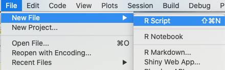

Chapter 3 Getting Setup in R and RStudio
This chapter will tell you how to download R and RStudio. It will also explain the differences between these two tools and how to navigate their user interfaces.
If you have already setup these two tools, feel free to skip ahead to the next chapter. However, if you’re still unsure of how to navigate the tools, you may find certain sections useful.
3.1 How to Download R
To download R, go to this website: https://www.r-project.org/
You will then have to go through a series of options and screens to download R. Don’t worry. I’ll explain each of them along the way.
First, you’ll select the “download R” link in the first paragraph.
Second, you’ll select a CRAN mirror. Select the one that’s closest to you. For example, I live in Lawrence, Kansas. That conveniently has a CRAN mirror in my own city. If you live in Melbourne, Australia, you’ll select the mirror hosted by the University of Melbourne.
Don’t worry. There’s not much difference to the user in these mirrors. It simply helps optimize your ability to download packages from a nearby source, rather than from some other country in the world. This isn’t a big deal for a small time programmer or researcher, but it’s beneficial for large scale operations to carefully choose their mirror.
Third, you’ll select the option for your operating system:

That will take you to a page where you can select the latest release:

Download and install the latest release.
3.2 Understanding Base R’s User Interface
I won’t focus too much on the R interface. We won’t use it much in this book. We’ll be using RStudio (more on that in a bit). However, go ahead and open up R. If you have a Mac, it will have this icon:

Once you open it, you should see the R console. The R console is where you type commands. You’ll continue to use the console in RStudio later.
Go ahead and input 2*2 to get a feel for it. You can hit Ctrl+Enter on a Windows version and Command+Enter on a Mac OS to run the command.
## [1] 4As you notice, the R console doesn’t allow you to go back and edit previously executed commands.
In order to save and edit a script, you’ll need to create a document. A document in this context is basically just a text file that saves the code you want to reference later.
Go to the File menu and select New Document. You should have two windows afterwards like the screenshot below:

Go ahead and copy and paste this code into the document:
Highlight different parts of the code and hit Command-Enter or Ctrl-Enter and see how it interacts with the console. (It may ask you to re-select a CRAN mirror. Go ahead and re-select the one you used to download.)

Saving scripts this way allows you to modify your code and then re-execute it in the console.
We’ll go into more detail about how to input and analyze data later.
Go ahead and close R for now. No need to save anything.
3.3 Limitations of R Base
The R console in the base version is a simple interface. Sometimes this is nice because you don’t get overwhelmed with all the information displayed in RStudio, which we’ll cover in a second. If you need to run a few calculations and know your data set well, this is a good setup.
The downside is that the console can’t display large amounts of data.
If you look at the screen shot below, I attempted to review metadata from the US Census Bureau. As you can see, it’s all squished together because the R console can’t cleanly display it.

In order to use the R console for further analysis, I’d have to find a different way to view this data I created.
That’s where RStudio comes in handy.
3.4 What is RStudio?
If you don’t already feel totally confused and overwhelmed with understanding R and R packages – don’t worry. I’m about to make things even more confusing by introducing you to RStudio!
RStudio is an IDE (integrated development environment) that allows more interactivity and for you to visually keep track of what you’re doing.
In simpler words, it’s a handy user interface for programming in R.
It’s far easier to both get started and understand the R programming language by using RStudio. It makes importing data and packages easier. It also makes it easier to manage and visually review what data and packages you have loaded. And lastly, it’s just plain nicer looking.
This book will primarily use RStudio for examples. I suggest downloading it to get the best use of my material.
3.5 How to Download RStudio
To download RStudio, go to this website: https://rstudio.com/products/rstudio/download/
Scroll down and you’ll see a big blue button to download the latest version of RStudio.

You can tell that RStudio was designed for the end-user in mind by how painless it is to download compared to base R.
Go ahead and install it once the download finishes.
You’ll see an icon like this appear in your applications folder. Go ahead and open it.
3.6 Understanding RStudio Interface
The RStudio interface is broken up into four panes. The default pane setting has the following:
- Source
- Console
- Environment, History, and Connections
- Files, Plots, Package, Help, and Viewer
The source pane on the top left is a handy one.

This pane displays previously saved or new R scripts you wrote in the past.
You may not be able to see this pane yet. Especially if you’ve never opened or saved a script before. To view the source pane, go to the top menu and click File, New File, and then R Script.

The source pane can also show loaded data sets as well.
If you recall, I said base R had a limitation if you want to review extremely large data sets. This is where RStudio really comes in handy. Down below is the same Census data set that I attempted to view earlier:
And here is how it looked in base R:
The console pane on the bottom left is more or less the same as the base R console we reviewed earlier. It allows you to enter commands.
However, you won’t be able to save those commands as a script unless you write them in the source pane above. That’s similar to what we did with base R and that new document.
This pane also has a Terminal and an R Markdown tab (if you have the latter installed). The Terminal allows you to enter commands to interact with your computer. IT professionals use this frequently. You probably won’t.
R Markdown may not appear for you yet. I’ll explain what R Markdown in a later chapter, but this tab merely shows the log for producing an R Markdown export.
The top right pane includes environment, history, and connections as tabular options.
Environment is very handy and it’s something that sets RStudio apart from the base version. It shows objects with assigned names that are saved in your environment.
We’ll go into objects extensively in the next chapter. Along with packages, they’re the most important component of R programming. What you need to remember here is that the environment tab in this top right pane tells you what you have saved.
The history section is one I don’t use too often, but I could see why some people would find it handy. It tells you what commands you’ve run during your R session. So anything you input in your console will show up here as a record.
The connection tab is useful for those who want to connect to a database or data warehouse.
If you’re a researcher, you may not use this much. If you work with databases in any capacity, this will make it easier to simply query data directly from the database, as opposed to importing it in via CSV files or spreadsheets.
The bottom right pane is a very useful addition provided by RStudio. It contains a separate tab for files, plots, packages, help, and viewer.
I’m going to start with the packages tab. If you recall, I said that packages are what makes R such a useful programming language. It allows you to customize and import functions to suit your needs.
This is a useful little tab. If you open a previously saved script, you may find out that some functions need a package to execute. This tab can tell you whether you need to install that package or simply need to re-load it.
I’ll have a whole chapter dedicated to finding packages, installing packages, and loading packages.
Plots is a tab that displays any plots you create using graphical commands. We’ll cover this in more detail in a later chapter.
Help is a super helpful tab. You can find the extensive R documentation there that explains many of the functionality of R and how it operates. It also will display information you look up on packages and functions you download.
If you ever add a ? before a function, it will display the documentation in the help section.
Try adding the following command to the R console and see what happens:
Here’s what it should look like on your screen:
Don’t forget about this trick! It helps a lot!
Lastly, we have the files and the viewer tab.
The files tab displays all the files you can open in RStudio for a given folder. This is helpful because you don’t have to specify a file path when loading files listed here.
The viewer tab allows to display non-R related outputs, such as a website or JavaScript graphics.
3.7 Things to Remember
- R packages contains new functions that allow you to use R for your own specific purposes
- RStudio is a more user friendly interface